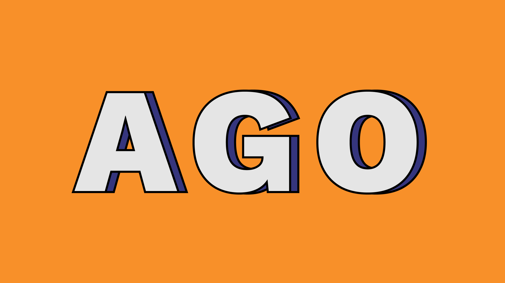

-
Case StudyThe Art Gallery of OntarioFiled under , , .
The Art Gallery of Ontario (AGO) is one of the longest standing art institutions in Canada. With a revitalized vision towards reframing what constitutes Canadian art, affecting new acquisitions, exhibitions and programming, a visual rebranding is opportune. Myself and my designer co-conspirator Elora Crawford present a new vision for a new decade: a modular, playful, and scalable design system for the AGO.
-
Case StudyStudio Plates
Filed under , , , .
Studio Plates was founded by Elora Crawford and Lucas Regazzi January 2021 as a collaborative exercise in graphic design and identity branding from the perspectives of contemporary art, accessibility, playfulness and pedagogical methods.
-
Case StudyThe Store Patch

Filed under , .
The store Patch is a place to play with the possibilities of clothing and personal objects—a placeholder for the hope that what we wear and how we wear it might mean more to us. Clothing is a costume and a material ode, a hold that holds. Too, it is overly abundant.
-
Case StudyAustin Doughs

Filed under ,, , .
For whatever reason, I’ve made three kinds of jams the past week or so (raspberry, blueberry, and even a kumquat marmalade!) and I had some leftover egg whites, so I tried to make a meringue for the first time. These French meringue cookies swirled with jam and certainly sweet, with some nice subtle tartness from the jams.